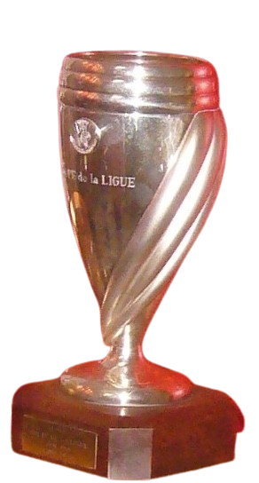
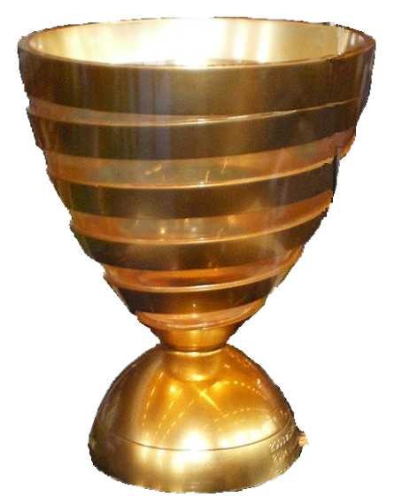
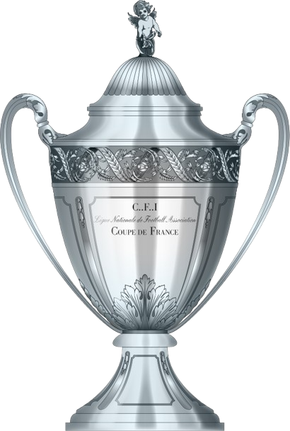
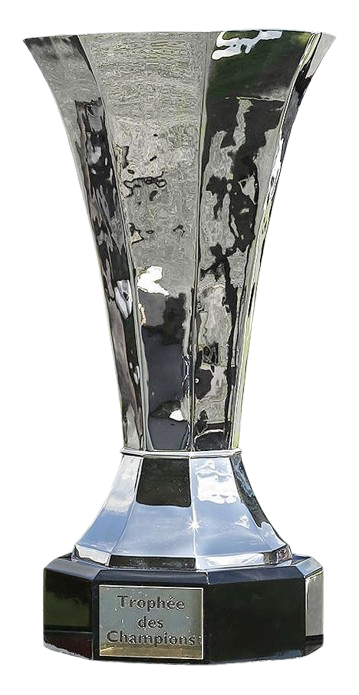
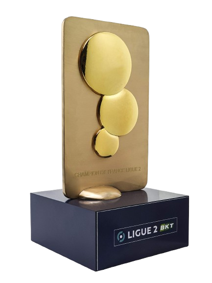
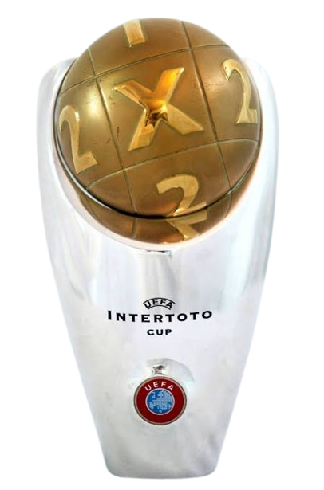

Retrouvez ici les principaux trophées remportés par le Racing Club de Lens.

Ligue 1
Champion de France
1997/1998
Coupe de la Ligue
Vainqueur de la compétition
1998/1999
Coupe de France
Vainqueur de la compétition
2025/2026
Trophée des Champions
Vainqueur de la compétition
2026/2027
Ligue 2 BKT
Champion de deuxième division
1936/19371948/1949
1972/1973
2008/2009

Coupe Intertoto
Vainqueur de la compétition
2004/2005